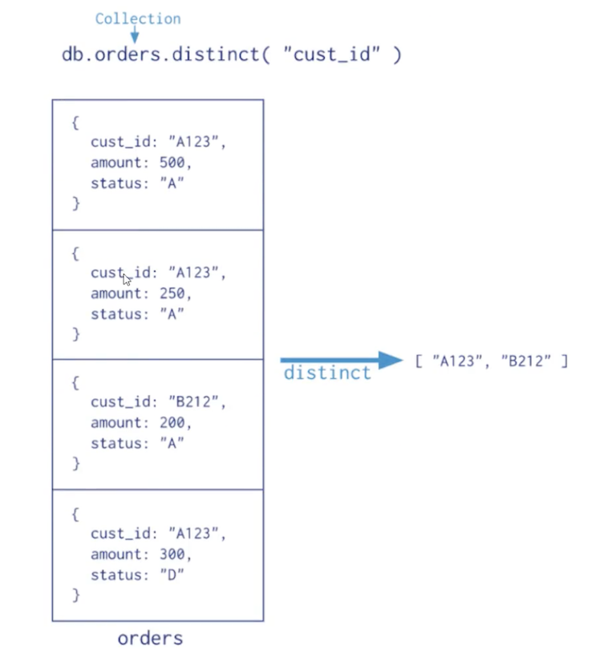
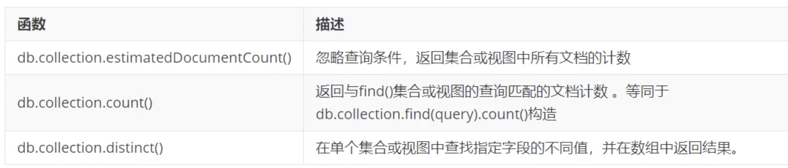
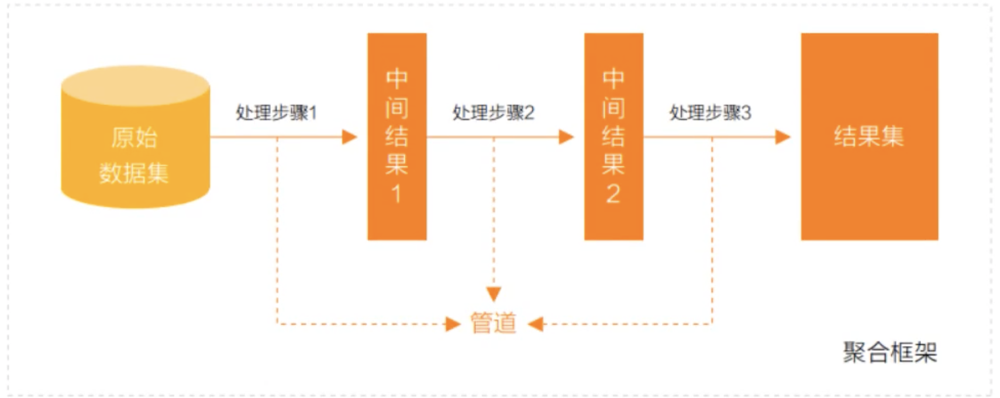
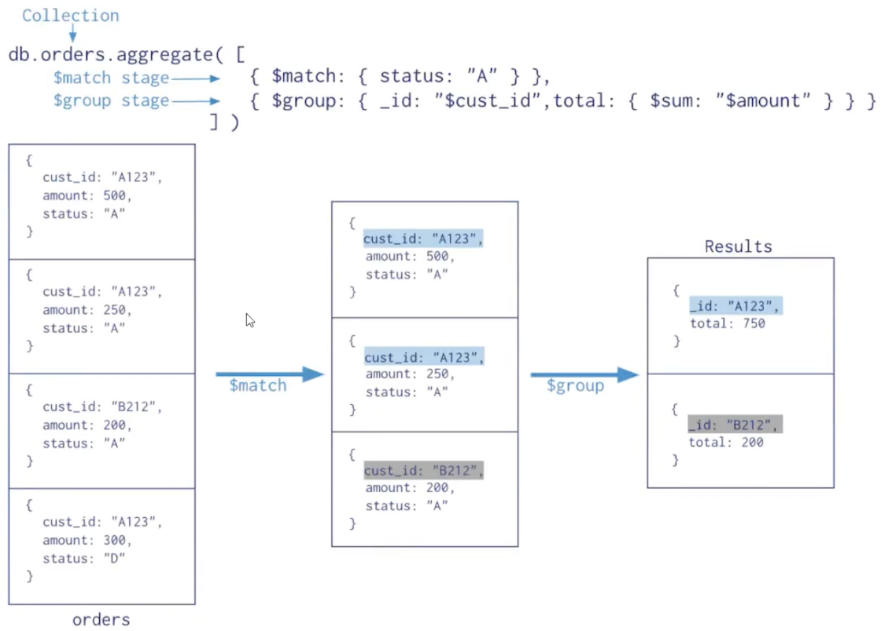
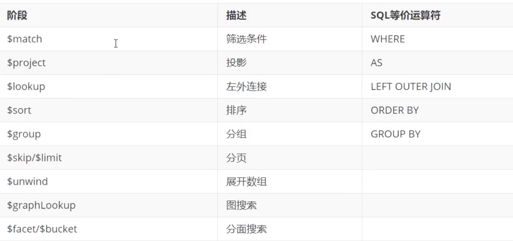
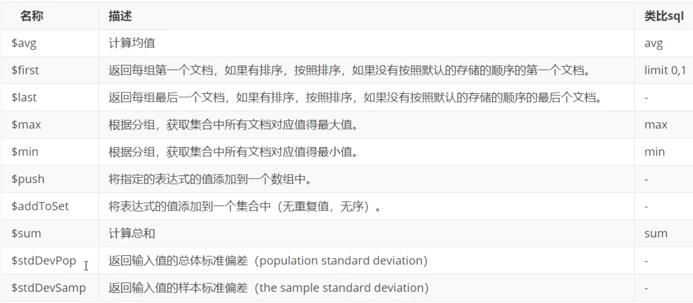
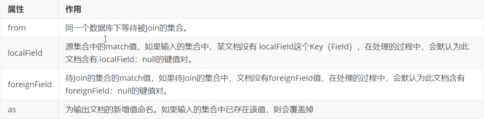

6 MongoDB 聚合操作
聚合操作处理数据记录并返回计算结果（诸如统计平均值，求和等）。聚合操作组值来自多个文档，可以对分组数据执行各种操作以返回单个结果。聚合操作包含三类：单一作用聚合、聚合管道、Map Reduce
- 单一作用聚合：提供了对常见聚合过程的简单访问，操作都从单个集合聚合文档。
- 聚合管道是一个数据聚合的框架，模型基于数据处理流水线的概念。文档进入多级管道，将文档转换为聚合结果。
- MapReduce操作具有两个阶段: 处理每个文档并向每个输入文档发射一个或多个对象的map阶段，以及reduce组合map操作的输出阶段
6.1 单一作用聚合
MongoDB提供db.collection.estimatedDocumentCount(), db.collection.count(), db.collection.distinct() 这类单一作用的聚合函数。
所有这些操作都聚合来自单个集合的文档。虽然这些操作提供了对公共聚合过程的简单访问，但它们缺乏聚合管道和map-Reduce的灵活性和功能。
# ./mongod -f /mongodb/conf/mongo.conf
[root@jabox bin]# ./mongo localhost:27017 -u appdb -p jack --authenticationDatabase=appdb
MongoDB shell version v4.4.13
connecting to: mongodb://localhost:27017/test?authSource=appdb&compressors=disabled&gssapiServiceName=mongodb
Implicit session: session { "id" : UUID("83295a08-879f-46bf-92a0-a36769fdded9") }
MongoDB server version: 4.4.13
> use appdb
switched to db appdb
> db.books.find().count()
48
> db.books.count()
48
> db.books.count({type:"travel"})
11
> db.books.estimatedDocumentCount({type:"travel"})
48
> db.books.distinct("type")
> db.books.distinct("type")
[ "literature", "novel", "sociality", "technology", "travel" ]


# 检索books集合中所有文档的计数
db.books.estimatedDocumentCount()
# 计算与查询匹配的所有文档
db.books.count({favCount:{$gt:50}})
> db.books.count({favCount:{$gt:50}})
1
# 返回不同type的数组
> db.books.distinct("type")
# 返回收藏数大于20的文档不同type的数组
> db.books.distinct("type",{favCount:{$gt:20}})
[ "sociality" ]
6.2 聚合管道
什么是MongoDB聚合框架
MongoDB聚合框架（Aggregation Framework）是一个计算框架，它可以：
- 作用在一个或几个集合上：
- 对集合中的数据进行的一系列运算；
- 将这些数据转化为期望的形式；
从效果而言，聚合框架相当于SQL查询中的GROUP BY、LEFT OUTER JOIN、AS等
管道（Pipeline）和阶段（Stage)
整个聚合运算过程称为管道（Pipeline)，它是由多个阶段（Stage)组成的，每个管道
- 接受一系列文档（原始数据）;
- 每个阶段对这些文档进行一系列运算；
- 结果文档输出给下一个阶段；

聚合管道操作语法
pipeline ＝[$stage1, $stage2，… $stageN];
db.collection.aggregate(pipeline,{options})
- pipelines一组数据聚合阶段。除
$out、$Merge和＄geonear阶段之外、每个阶段都可以在管道中出现多次。 - options可选，聚合操作的其他参数。包含：查询计划、是否使用临时文件、游标、最大操作时间、读写策略、强制索引等等

常用的管道聚合阶段
聚台管道包含非常丰富的聚合阶段，下面是最常用的聚合阶段

https://www.mongodb.com/docs/manual/core/aggregation-pipeline/
聚合管道之$project
数据准备
准备数据集，执行脚本
booksnew.js
var tags = ["nosql","mongodb","document","developer","popular"];
var types = ["technology","sociality","travel","novel","literature"];
var books=[];
for(var i=0;i<50;i++){
var typeIdx = Math.floor(Math.random()*types.length);
var tagIdx = Math.floor(Math.random()*tags.length);
var tagIdx2 = Math.floor(Math.random()*tags.length);
var favCount = Math.floor(Math.random()*100);
var username = "xx00" + Math.floor(Math.random()*100);
var age = 20 + Math.floor(Math.random()*15);
var book = {
title: "book-" +i,
type: types[typeIdx],
tag: tags[tagIdx],
favCount: favCount,
author: "xxx"+i
};
books.push(book)
}
db.books.insertMany(books);
./mongo localhost:27017 -u fox -p fox --authenticationDatabase=admin
> show dbs
admin 0.000GB
appdb 0.000GB
config 0.000GB
local 0.000GB
> use aggdemo
switched to db aggdemo
> load("booksnew.js")
true
$project 投影操作
将原始字段投影成指定名称，如将集合中的：title投影成name
db.books.aggregate([{$project:{name:"$title"}}])
db.books.aggregate([{$project:{name:"$title"}}])
{ "_id" : ObjectId("624a4d590617ff50cb3e55d2"), "name" : "book-0" }
{ "_id" : ObjectId("624a4d590617ff50cb3e55d3"), "name" : "book-1" }
{ "_id" : ObjectId("624a4d590617ff50cb3e55d4"), "name" : "book-2" }
{ "_id" : ObjectId("624a4d590617ff50cb3e55d5"), "name" : "book-3" }
{ "_id" : ObjectId("624a4d590617ff50cb3e55d6"), "name" : "book-4" }
{ "_id" : ObjectId("624a4d590617ff50cb3e55d7"), "name" : "book-5" }
$project可以灵活控制输出文档的格式，也可以剔除不需要的字段
- 1 show the cols
- 0 hide the cols
db.books.aggregate([{$project:{name:"$title",_id:0,type:1,author:1}}])
> db.books.aggregate([{$project:{name:"$title",_id:0,type:1,author:1}}])
{ "type" : "novel", "author" : "xxx0", "name" : "book-0" }
{ "type" : "literature", "author" : "xxx1", "name" : "book-1" }
{ "type" : "technology", "author" : "xxx2", "name" : "book-2" }
{ "type" : "novel", "author" : "xxx3", "name" : "book-3" }
{ "type" : "technology", "author" : "xxx4", "name" : "book-4" }
从嵌套文档中排除字段
db.books.aggregate([
{$project:{name:"$title",_id:0,type:1,"author.name":1}}
])
> db.books.aggregate([
... {$project:{name:"$title",_id:0,type:1,"author.name":1}}
... ])
{ "type" : "novel", "name" : "book-0" }
{ "type" : "literature", "name" : "book-1" }
{ "type" : "technology", "name" : "book-2" }
{ "type" : "novel", "name" : "book-3" }
{ "type" : "technology", "name" : "book-4" }
或者
db.books.aggregate([
{$project:{name:"$title",_id:1,type:1, author:{name:1}}}
])
> db.books.aggregate([
... {$project:{name:"$title",_id:1,type:1, author:{name:1}}}
... ])
{ "_id" : ObjectId("624a4d590617ff50cb3e55d2"), "type" : "novel", "name" : "book-0" }
{ "_id" : ObjectId("624a4d590617ff50cb3e55d3"), "type" : "literature", "name" : "book-1" }
{ "_id" : ObjectId("624a4d590617ff50cb3e55d4"), "type" : "technology", "name" : "book-2" }
{ "_id" : ObjectId("624a4d590617ff50cb3e55d5"), "type" : "novel", "name" : "book-3" }
{ "_id" : ObjectId("624a4d590617ff50cb3e55d6"), "type" : "technology", "name" : "book-4" }
{ "_id" : ObjectId("624a4d590617ff50cb3e55d7"), "type" : "technology", "name" : "book-5" }
$match
$match用于对文档进行筛选，之后可以在得到的文档子集上做聚合，$match可以使用除了地理空间之外的所有常规查询操作符，在实际应用中尽可能将$match放在管道的前面位置。
类似于where
这样有两个好处：一是可以快速将不需要的文档过滤掉，以减少管道的工作量；二是如果再投射和分组之前执行＄match，查询可以使用索引。
db.books.aggregate([{$match:{type:"technology"}}])
> db.books.aggregate([{$match:{type:"technology"}}])
{ "_id" : ObjectId("624a4d590617ff50cb3e55d4"), "title" : "book-2", "type" : "technology", "tag" : "document", "favCount" : 4, "author" : "xxx2" }
{ "_id" : ObjectId("624a4d590617ff50cb3e55d6"), "title" : "book-4", "type" : "technology", "tag" : "developer", "favCount" : 37, "author" : "xxx4" }
{ "_id" : ObjectId("624a4d590617ff50cb3e55d7"), "title" : "book-5", "type" : "technology", "tag" : "popular", "favCount" : 34, "author" : "xxx5" }
{ "_id" : ObjectId("624a4d590617ff50cb3e55d8"), "title" : "book-6", "type" : "technology", "tag" : "nosql", "favCount" : 61, "author" : "xxx6" }
...
筛选管道操作和其他管道操作配合时候时，尽量放到开始阶段，这样可以减少后续管道操作符要操作的文档数，提升效率
db.books.aggregate([{$match:{type:"technology",title:/book-2/}}])
> db.books.aggregate([{$match:{type:"technology",title:/book-2/}}])
{ "_id" : ObjectId("624a4d590617ff50cb3e55d4"), "title" : "book-2", "type" : "technology", "tag" : "document", "favCount" : 4, "author" : "xxx2" }
{ "_id" : ObjectId("624a4d590617ff50cb3e55ea"), "title" : "book-24", "type" : "technology", "tag" : "document", "favCount" : 77, "author" : "xxx24" }
$count
计数并返回与查询匹配的结果数
db.books.aggregate([ {$match:{type:"technology"}}, {$count:"type_count"} ])
> db.books.aggregate([ {$match:{type:"technology"}}, {$count:"type_count"} ])
{ "type_count" : 13 }
$match阶段筛选出type匹配technology的文档，并传到下一阶段；$count阶段返回聚合管道中剩余文档的计数，并将该值分配给type_count
$group
按指定的表达式对文档进行分组，并将每个不同分组的文档输出到下一个阶段。输出文档包含一个_id字段，该字段按键包含不同的组。
输出文档还可以包含计算字段，该字段保存由$group的_Id字段分组的一些accumulator表达式的值。$group不会输出具体的文档而只是统计信息。
{$group:{_id:<expression>, <field1>: {<accumlator1> : <expression1>},...}}
- id字段是必填的，但是，可以指定id为null来为整个输入文档计算累计值
- 剩余的计算字段是可选的，并使用
＜accumulator＞运算符进行计算。 _id和<accumulator＞表达式可以接受任何有效的表达式。
accumulator 操作符

$group阶段的内存限制为1OOM默认情况下，如果stage超过此限制，$group将产生错误。但是，要允许处理大型数据集，请将allowDiskUse选项设置为true以启用＄group操作以写入临时文件。
book的数量，收藏总数和平均值
db.books.aggregate([
{$group: {_id: null, count:{$sum:1}, pop:{$sum: "$favCount"}, avg:{$avg:"$favCount"}}}
])
> db.books.aggregate([
... {$group: {_id: null, count:{$sum:1}, pop:{$sum: "$favCount"}, avg:{$avg:"$favCount"}}}
... ])
{ "_id" : null, "count" : 50, "pop" : 2415, "avg" : 48.3 }
统计每个作者的book收藏总数
db.books.aggregate([
{$group:{_id:"$author.name", pop:{$sum:"$favCount"}}}
])
> db.books.aggregate([
... {$group:{_id:"$author.name", pop:{$sum:"$favCount"}}}
... ])
{ "_id" : null, "pop" : 2415 }
db.books.aggregate([
{$group:{_id:"$author.name", types:{$addToSet:"$type"}}}
])
$unwind
可以将数组拆分为单独的文档
v3.2+ 支持如下语法：
{
$unwind:
{
# 要指定宇段路径，在字段名称前加上$符并用引号括起来。
path: <field path>,
# 可选，一个新字段的名称用于存放元素的数组索引。该名称不能以$开头。
includeArraylndex: <string>,
# 可选，default :false，若为true，如果路径为空，缺少或为空数组，则`$unwind`输出文档
preserveNullAndEmptyArrays: <boolean>
}}
$unwind: 要指定宇段路径，在字段名称前加上$符并用引号括起来- path: 可选，一个新字段的名称用于存放元素的数组索引。该名称不能以
$开头。 - includeArraylndex: 可选，default :false，若为true，如果路径为空，缺少或为空数组，则
$unwind输出文档
姓名为xx0006的作者的book的tag数组拆分为多个文档
db.books.aggregate([
{$match:{"author": "name":"xxOO6"}},
{{$unwind:"$tag"}
])
db.books.aggregate([{$unwind:"$tag"}])
> db.books.aggregate([{$unwind:"$tag"}])
{ "_id" : ObjectId("624a4d590617ff50cb3e55d2"), "title" : "book-0", "type" : "novel", "tag" : "developer", "favCount" : 99, "author" : "xxx0" }
{ "_id" : ObjectId("624a4d590617ff50cb3e55d3"), "title" : "book-1", "type" : "literature", "tag" : "mongodb", "favCount" : 22, "author" : "xxx1" }
{ "_id" : ObjectId("624a4d590617ff50cb3e55d4"), "title" : "book-2", "type" : "technology", "tag" : "document", "favCount" : 4, "author" : "xxx2" }
{ "_id" : ObjectId("624a4d590617ff50cb3e55d5"), "title" : "book-3", "type" : "novel", "tag" : "popular", "favCount" : 93, "author" : "xxx3" }
{ "_id" : ObjectId("624a4d590617ff50cb3e55d6"), "title" : "book-4", "type" : "technology", "tag" : "developer", "favCount" : 37, "author" : "xxx4" }
db.books.aggregate([{$match:{type:"travel"}},{$unwind:"$tag"}])
> db.books.aggregate([{$match:{type:"travel"}},{$unwind:"$tag"}])
{ "_id" : ObjectId("623b0766b815b989a2335e7c"), "title" : "book-7", "type" : "travel", "tag" : "mongodb", "favCount" : -100, "author" : "xxx7" }
{ "_id" : ObjectId("623b0766b815b989a2335e7f"), "title" : "book-10", "type" : "travel", "tag" : "nosql", "favCount" : -100, "author" : "xxx10", "publishDate" : ISODate("2022-03-26T09:09:54.851Z") }
{ "_id" : ObjectId("623b0766b815b989a2335e85"), "title" : "book-16", "type" : "travel", "tag" : "developer", "favCount" : -100, "author" : "xxx16" }
姓名为xx006的作者的book的tag数组拆分为多个文档
db.books.aggregate([
{$match:{"author.name":"xxx006"}},
{$unwind:"$tag"}
])
每个作者的book的tag合集
db.books.aggregate([
{$unwind: "$tag"},
{$group:{_id:"$author.name", types:{$addToSet:"$tag"}}}
])
> db.books.aggregate([
... {$unwind: "$tag"},
... {$group:{_id:"$author.name", types:{$addToSet:"$tag"}}}
... ])
{ "_id" : null, "types" : [ "developer", "mongodb", "document", "popular", "nosql" ] }
案例
db.books.insert([
{ "title" : "book-51",
"type" : "technology",
"favCount": 11,
"tag": [],
"author" : {
"name" : "fox",
"age" : 28
}
},{
"title" : "book-52",
"type" : "technology",
"favCount" : 15,
"author" : {
"name" : "fox",
"age" : 28
}
},{
"title" : "book-53",
"type" : "technology",
"tag" : [
"nosql",
"document"
],
"favCount" : 20,
"author" : {
"name" : "fox",
"age" : 28
}
}])
BulkWriteResult({
"writeErrors" : [ ],
"writeConcernErrors" : [ ],
"nInserted" : 3,
"nUpserted" : 0,
"nMatched" : 0,
"nModified" : 0,
"nRemoved" : 0,
"upserted" : [ ]
})
测试
# 使用includeArrayIndex选项来输出数组元素的数组索引
db.books.aggregate([
{$match:{"author.name":"fox"}},
{$unwind: {path: "$tag", includeArrayIndex: "arraylndex"}}
])
# 使用 preserveNullAndEmptyArrays选项在输出中缺少size, null或者空数组文档
db.books.aggregate([
{$match: {"author.name":"fox"}},
{$unwind: {path:"$tag", preserveNullAndEmptyArrays: true}}
])
> db.books.aggregate([
... {$match:{"author.name":"fox"}},
... {$unwind: {path: "$tag", includeArrayIndex: "arraylndex"}}
... ])
{ "_id" : ObjectId("624d6de764f997879be8a9ee"), "title" : "book-53", "type" : "technology", "tag" : "nosql", "favCount" : 20, "author" : { "name" : "fox", "age" : 28 }, "arraylndex" : NumberLong(0) }
{ "_id" : ObjectId("624d6de764f997879be8a9ee"), "title" : "book-53", "type" : "technology", "tag" : "document", "favCount" : 20, "author" : { "name" : "fox", "age" : 28 }, "arraylndex" : NumberLong(1) }
> db.books.aggregate([
... {$match: {"author.name":"fox"}},
... {$unwind: {path:"$tag", preserveNullAndEmptyArrays: true}}
... ])
{ "_id" : ObjectId("624d6de764f997879be8a9ec"), "title" : "book-51", "type" : "technology", "favCount" : 11, "author" : { "name" : "fox", "age" : 28 } }
{ "_id" : ObjectId("624d6de764f997879be8a9ed"), "title" : "book-52", "type" : "technology", "favCount" : 15, "author" : { "name" : "fox", "age" : 28 } }
{ "_id" : ObjectId("624d6de764f997879be8a9ee"), "title" : "book-53", "type" : "technology", "tag" : "nosql", "favCount" : 20, "author" : { "name" : "fox", "age" : 28 } }
{ "_id" : ObjectId("624d6de764f997879be8a9ee"), "title" : "book-53", "type" : "technology", "tag" : "document", "favCount" : 20, "author" : { "name" : "fox", "age" : 28 } }
$limit
限制传递到管道中下一阶段的文档数
db.books.aggregate([
{$limit : 5}
])
此操作仅返回管道传递给它的前5个文档。$limt对其传递的文档内容没有影响。
注意：当＄sort在管道中的$Iimit之前立即出现时，$sort操作只会在过程中维持前n个结果，其中n是指定的限制，而MongoDB只需要将n个项存储在内存中。
$skip
跳过进入stage的指定数量的文档，并将其余文档传递到管道中的下一个阶段
db.books.aggregate([
{$skip : 5}
])
此操作将跳过管道传递给它的前5个文档。$skip对沿着管道传递的文档的内容没有影响。
$sort
对所有输入文档进行排序，并按排序顺序将他们返回到管道。 语法：
{$sort: { <field1>: <sort order>,<field 2>: <sort order＞… }}
要对字段进行排序，请将排序顺序设置为1或-1，以分别指定升序或降序排序，如下例所示
db.books.aggregate([
{$sort: {favCount:-1, title: 1}}
])
> db.books.aggregate([
... {$sort: {favCount:-1, title: 1}}
... ])
{ "_id" : ObjectId("624a4d590617ff50cb3e55d2"), "title" : "book-0", "type" : "novel", "tag" : "developer", "favCount" : 99, "author" : "xxx0" }
{ "_id" : ObjectId("624a4d590617ff50cb3e5601"), "title" : "book-47", "type" : "sociality", "tag" : "popular", "favCount" : 97, "author" : "xxx47" }
{ "_id" : ObjectId("624a4d590617ff50cb3e55d5"), "title" : "book-3", "type" : "novel", "tag" : "popular", "favCount" : 93, "author" : "xxx3" }
{ "_id" : ObjectId("624a4d590617ff50cb3e55ef"), "title" : "book-29", "type" : "sociality", "tag" : "document", "favCount" : 91, "author" : "xxx29" }
{ "_id" : ObjectId("624a4d590617ff50cb3e55fd"), "title" : "book-43", "type" : "novel", "tag" : "nosql", "favCount" : 90, "author" : "xxx43" }
{ "_id" : ObjectId("624a4d590617ff50cb3e55fb"), "title" : "book-41", "type" : "literature", "tag" : "nosql", "favCount" : 87, "author" : "xxx41" }
{ "_id" : ObjectId("624a4d590617ff50cb3e55e5"), "title" : "book-19", "type" : "travel", "tag" : "document", "favCount" : 86, "author" : "xxx19" }
{ "_id" : ObjectId("624a4d590617ff50cb3e55dc"), "title" : "book-10", "type" : "technology", "tag" : "developer", "favCount" : 84, "author" : "xxx10" }
{ "_id" : ObjectId("624a4d590617ff50cb3e55fe"), "title" : "book-44", "type" : "technology", "tag" : "document", "favCount" : 80, "author" : "xxx44" }
{ "_id" : ObjectId("624a4d590617ff50cb3e55ea"), "title" : "book-24", "type" : "technology", "tag" : "document", "favCount" : 77, "author" : "xxx24" }
{ "_id" : ObjectId("624a4d590617ff50cb3e55f5"), "title" : "book-35", "type" : "sociality", "tag" : "popular", "favCount" : 77, "author" : "xxx35" }
{ "_id" : ObjectId("624a4d590617ff50cb3e55df"), "title" : "book-13", "type" : "literature", "tag" : "document", "favCount" : 74, "author" : "xxx13" }
{ "_id" : ObjectId("624a4d590617ff50cb3e55f0"), "title" : "book-30", "type" : "technology", "tag" : "developer", "favCount" : 72, "author" : "xxx30" }
{ "_id" : ObjectId("624a4d590617ff50cb3e55fc"), "title" : "book-42", "type" : "technology", "tag" : "popular", "favCount" : 71, "author" : "xxx42" }
{ "_id" : ObjectId("624a4d590617ff50cb3e55e7"), "title" : "book-21", "type" : "sociality", "tag" : "popular", "favCount" : 65, "author" : "xxx21" }
{ "_id" : ObjectId("624a4d590617ff50cb3e55f3"), "title" : "book-33", "type" : "novel", "tag" : "document", "favCount" : 65, "author" : "xxx33" }
{ "_id" : ObjectId("624a4d590617ff50cb3e55e1"), "title" : "book-15", "type" : "novel", "tag" : "mongodb", "favCount" : 64, "author" : "xxx15" }
{ "_id" : ObjectId("624a4d590617ff50cb3e55d9"), "title" : "book-7", "type" : "literature", "tag" : "document", "favCount" : 63, "author" : "xxx7" }
{ "_id" : ObjectId("624a4d590617ff50cb3e55ee"), "title" : "book-28", "type" : "travel", "tag" : "mongodb", "favCount" : 62, "author" : "xxx28" }
{ "_id" : ObjectId("624a4d590617ff50cb3e55d8"), "title" : "book-6", "type" : "technology", "tag" : "nosql", "favCount" : 61, "author" : "xxx6" }
$lookup
Mongodb 3.2版本新增，主要用来实现多表关联查询，相当关系型数据库中多表关联查询。每个输入待处理的文档的处理，经过＄lookup阶段 的适配文档，输出的新文档中会包含一个新生成的数组(可根据需要命名新key)。数组列存放的数据是来自被Join集合，如果没 有，集合为空（即为[])
语法
db.collection.aggregate([{
$lookup:{
from: "<collection to join>"
localField: "<field from the input documents>"
foreignField: "<field from the documents of the from collection>"
as: "<output array field>"
}
})

注意：null = null 此为真
其语法功能类似于下面的伪SQL语句
SELECT * ＜output array field>
FROM collection
WHERE ＜output array field＞ IN (SELECT *
FROM <collection to join>
WHERE <foreignField＞=＜collection.local.Field>);
准备数据
db.customer.insert({customerCode:1, name:"customer1", phone:"13112345678",address:"test1"}) db.customer.insert({customerCode:2,name:"customer2",phone:"13112345679",address:"test2"})
db.order.insert({orderId:1, orderCode:"order001",customerCode:1, price:200})
db.order.insert({orderId1:2,orderCode:"order002",customerCode:2,price:400})
db.orderitem.insert({itemId:1,productName:"apples",qutity:2,orderId:1})
db.orderItem.insert({itemId:2, productName:"oranges", qutity:2, orderId:1})
关联查询
db.customer.aggregate([
{$lookup: {
from: "order",
localField: "customerId",
foreignField: "customerId",
as: "customerOrder"
}
}
])
> db.customer.aggregate([
... {$lookup: {
... from: "order",
... localField: "customerId",
... foreignField: "customerId",
... as: "customerOrder"
... }
... }
... ])
{ "_id" : ObjectId("624db55c64f997879be8a9ef"), "customerCode" : 1, "name" : "customer1", "phone" : "13112345678", "address" : "test1", "customerOrder" : [ { "_id" : ObjectId("624db5b964f997879be8a9f1"), "orderId" : 1, "orderCode" : "order001", "customerCode" : 1, "price" : 200 }, { "_id" : ObjectId("624db5c064f997879be8a9f2"), "orderId1" : 2, "orderCode" : "order002", "customerCode" : 2, "price" : 400 } ] }
{ "_id" : ObjectId("624db56164f997879be8a9f0"), "customerCode" : 2, "name" : "customer2", "phone" : "13112345679", "address" : "test2", "customerOrder" : [ { "_id" : ObjectId("624db5b964f997879be8a9f1"), "orderId" : 1, "orderCode" : "order001", "customerCode" : 1, "price" : 200 }, { "_id" : ObjectId("624db5c064f997879be8a9f2"), "orderId1" : 2, "orderCode" : "order002", "customerCode" : 2, "price" : 400 } ] }
$lookup:
db.customer.aggregate([
{$lookup: {
from: "customer",
localField: "customerCode",
foreignField: "customerCode",
as: "customer"
}
},
{$lookup: {
from: "orderItem",
localField: "orderId",
foreignField: "orderId",
as: "orderItem"
}
}
])
{ "_id" : ObjectId("624db55c64f997879be8a9ef"), "customerCode" : 1, "name" : "customer1", "phone" : "13112345678", "address" : "test1", "customer" : [ { "_id" : ObjectId("624db55c64f997879be8a9ef"), "customerCode" : 1, "name" : "customer1", "phone" : "13112345678", "address" : "test1" } ], "orderItem" : [ ] }
{ "_id" : ObjectId("624db56164f997879be8a9f0"), "customerCode" : 2, "name" : "customer2", "phone" : "13112345679", "address" : "test2", "customer" : [ { "_id" : ObjectId("624db56164f997879be8a9f0"), "customerCode" : 2, "name" : "customer2", "phone" : "13112345679", "address" : "test2" } ], "orderItem" : [ ] }